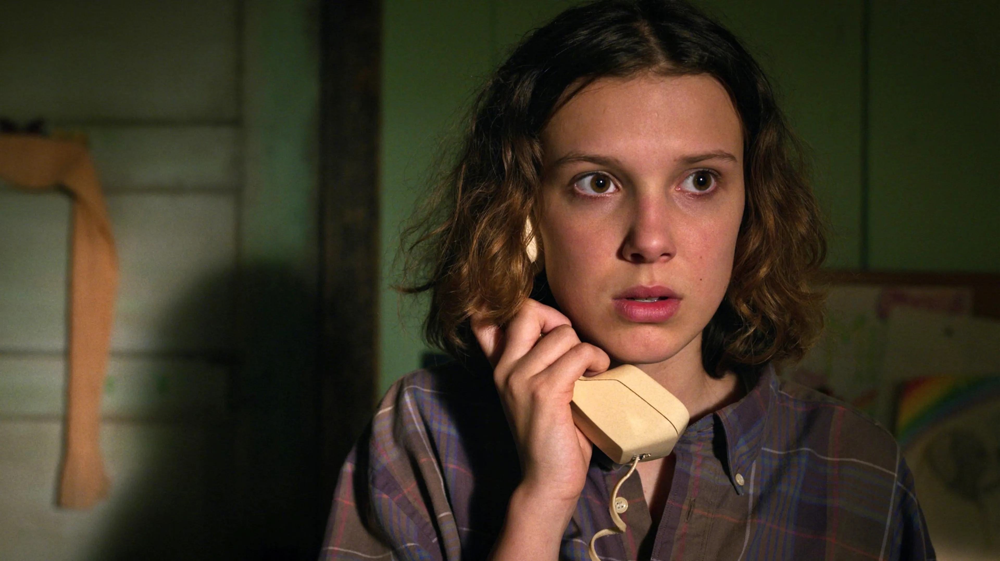

Millie Bobby Brown como Eleven (Once)
Niña con poderes telequinéticos que ayuda a enfrentarse al Upside Down. Escapa de un laboratorio secreto donde era objeto de experimentos.

David Harbour como Jim Hopper
Ex jefe de policía de Hawkins que investiga la desaparición de Will y se enfrenta a fuerzas sobrenaturales.

Sadie Sink como Max Mayfield
Se convierte rápidamente en parte del grupo de amigos (Mike, Lucas, Dustin y Will).
Además, el grupo central incluye a Mike, Dustin, Lucas, Will, Robin, Nancy, Jonathan y Steve.